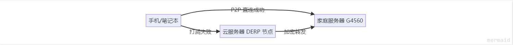
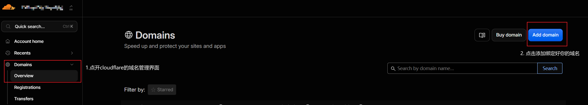
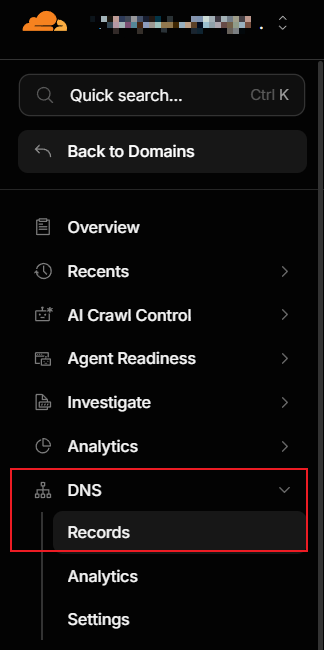
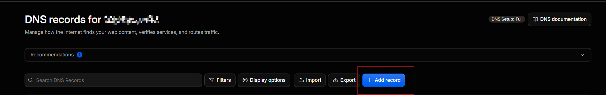
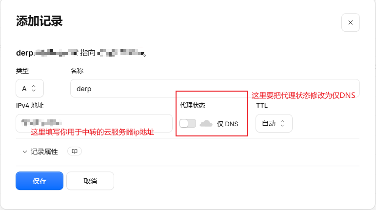
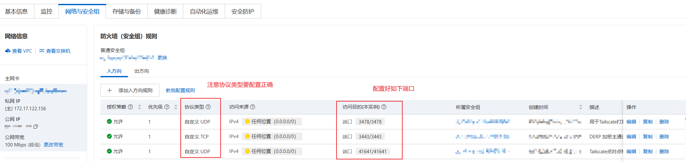
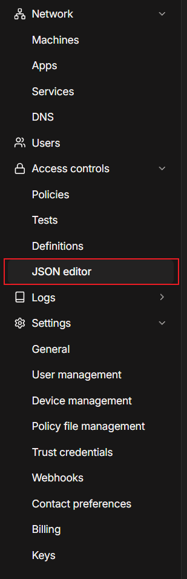
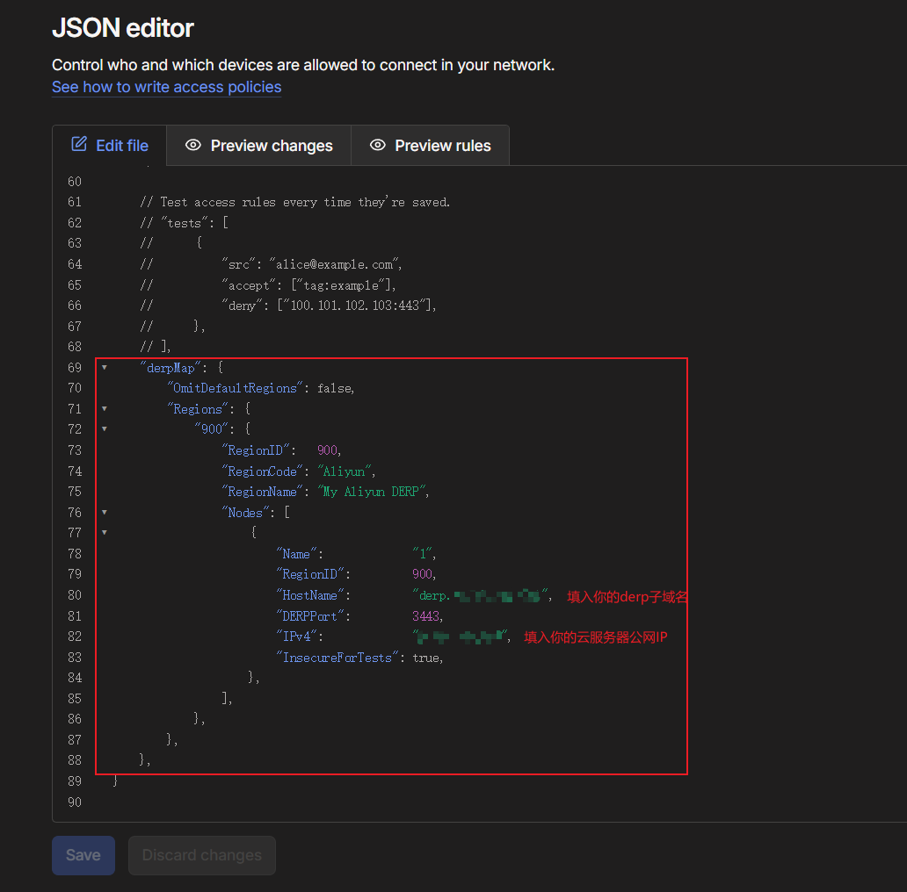

自建 Tailscale DERP 节点不完全指北
Tsk家里部署了一台私有服务器，负责相册备份。平时在局域网内用得很舒服，但一直没考虑过外网异地访问的问题。 最近了解到利用Tailscale组建虚拟局域网的方式来进行外网访问 安全性高还方便 正好还有一台学生优惠白嫖的2c2g阿里云服务器一直吃灰(懒狗懒得用bushi
Tailscale 优先走 P2P 直连，网络好的时候能跑满家里的上行带宽；可一旦P2P打洞失败，流量就会自动切到官方部署在海外的 DERP 中转节点，延迟 200ms+，速度显然无法接受。诶？ 正好我能把一台有公网 IP 的云服务器变成私人专属的 DERP 节点，大幅降低无法P2P打洞情况下的连接延迟。
本文记录完整的部署流程，包括如何做到"防白嫖"——只允许你自己网络里的设备使用这台中转站。
本文搭建特点： 无需备案 使用docker容器部署 部署方式简单
什么是 Tailscale？
Tailscale 是一款基于 WireGuard 协议的组网工具，它把"组建虚拟局域网"这件事简化到了极致：在每台设备上安装客户端、登录同一个账号，这些设备就会自动组成一张加密的私有虚拟网络（Mesh VPN），无论它们分散在家庭、公司还是不同的城市。
它的核心特点可以概括为：
- 零配置组网：不需要公网 IP，也不需要去路由器上做端口转发；
- 端到端加密：设备间的流量基于 WireGuard 加密，数据平面不依赖第三方明文中转；
- 跨平台：Windows、macOS、Linux、Android、iOS 都有客户端，电视盒子也能装；
- 个人使用免费：普通家庭用户基本够用。
理解 Tailscale 的架构，可以把它分成两个平面：
- 控制平面：由官方协调服务器负责设备发现、密钥分发和访问策略下发，它不承载你的业务数据；
- 数据平面：设备之间的数据流量会优先尝试 P2P 直连（通过 NAT 打洞建立点对点通道），打洞失败时再经 DERP 中继服务器转发。
DERP 全称是 Designated Encrypted Relay for Packets（数据包指定加密中继），也就是 Tailscale 内置的加密中继节点。问题恰恰出在这里：默认的中继节点部署在海外，对国内用户来说延迟高、速度慢。这正是我们接下来要自建专属 DERP 的原因。
为什么值得自建 DERP
Tailscale 的连接策略是"先直连，失败再中转"：
- P2P 直连成功：客户端之间点对点通信，跑满你家宽带的实际上行速度（30M-50M）；
- 打洞失败：自动切换 DERP 中转，官方节点远在海外，延迟高、速度慢；
- 自建 DERP 之后：打洞失败时流量无缝切换到你的云服务器，延迟通常只有 20-40ms，连接非常稳定。
也就是说，你同时拿到两种能力：网络好时满速直连，网络差时低延迟兜底。这就是"P2P 与中转完美结合"的含义。
架构与原理

防白嫖的核心设计：云服务器上同时运行 Tailscale 客户端 和 DERP 容器。容器通过挂载宿主机的 tailscaled.sock 与 Tailscale 进程通信。当有陌生设备试图连接你的 443 端口时，DERP 会去核对对方的公钥是否属于你的 Tailscale 网络——不在名单里，直接 Connection Refused。
快速开始
准备工作
-
** 域名**
购买好一个域名(域名购买可在阿里云、腾讯云处购买 个人使用没有必要买.com域名 啥便宜买啥就行)
并准备一个子域名（如
derp.yourdomain.com），把 A 记录解析到云服务器的公网 IP 操作如下
绑定好你的域名后 打开相应的域名管理界面 转到DNS管理界面

在对应域名的DNS配置中 添加一条记录(这里我使用的是Cloudflare的DNS解析服务 如果使用其他服务请自行研究)


- 云厂商安全组
（以阿里云为例），放行三个端口：
TCP 3443：用于 DERP 节点的加密流量转发 核心通信 加密主通道
UDP 3478：用于 Tailscale 的 STUN 测速打洞（千万不能配成 TCP 这里作者不小心配成TCP排查了好一会T-T）
UDP 41641：用于Tailscale打洞的端口

- 云服务器需要能运行 Docker 和 Docker Compose 如何安装Docker和使用 Docker Compose 请自行搜索
第一步：云服务器加入你的 Tailscale 网络
云服务器和私有服务器分别执行以下命令 登录tailscale账号并绑定设备
curl -fsSL https://tailscale.com/install.sh | sh
sudo tailscale up
按提示完成登录后，云服务器就和家里的服务器处于同一个虚拟局域网了
第二步：部署 DERP 容器
在当前用户目录下创建一个文件夹(如tailscale-derp 来存放相关容器文件)
mkdir -p ~/tailscale-derp && cd ~/tailscale-derp
nano docker-compose.yml # 创建docker-compose文件并编辑
粘贴以下内容（记得替换自己的域名）：
services:
derper:
image: ghcr.io/yangchuansheng/derper:v1.98.8
container_name: derper
restart: always
ports:
- "3443:443" # 避开国内强制备案拦截，将容器443映射到宿主机3443
- "3478:3478/udp" # STUN 穿透打洞专用端口
volumes:
- /var/run/tailscale/tailscaled.sock:/var/run/tailscale/tailscaled.sock
- ./certs:/app/certs
environment:
- DERP_DOMAIN=derp.yourdomain.com # 替换为你的域名
- DERP_VERIFY_CLIENTS=true # 开启防白嫖验证
- DERP_CERT_MODE=manual # 手动申请 SSL 证书
保存并退出后
执行以下命令使用 OpenSSL 手动签发本地证书
mkdir -p ~/tailscale-derp/certs && cd ~/tailscale-derp
openssl req -x509 -newkey rsa:4096 -sha256 -days 3650 -nodes \
-keyout certs/derp.你的域名.com.key -out certs/derp.你的域名.com.crt \
-subj "/CN=derp.你的域名.com" -addext "subjectAltName=DNS:derp.你的域名.com"
启动容器：
docker compose up -d
这里为了避免备案和阿里云的拦截 使用 OpenSSL 手动签发本地证书，避开常规 443 端口的 Let’s Encrypt 验证限制
第三步：在 Tailscale 控制台注册你的节点
登录 Tailscale 管理后台，进入 Access Controls 页面；

在 JSON 配置的末尾（注意与前面的条目用逗号分隔）加入：
"derpMap": {
"OmitDefaultRegions": false,
"Regions": {
"900": {
"RegionID": 900,
"RegionCode": "Aliyun",
"RegionName": "My Aliyun DERP",
"Nodes": [
{
"Name": "1",
"RegionID": 900,
"HostName": "derp.yourdomain.com",
"DERPPort": 443,
"IPv4": "你的云服务器公网IP"
}
]
}
}
}
点击 Save。官方服务器会把新的节点信息同步给所有客户端。

关于 OmitDefaultRegions：设为 true 会彻底禁用官方海外节点、强制只走你的云服务器；设为 false 则保留官方节点作为最后兜底。建议先用 false 测试，确认自己的节点稳定后再决定是否收紧。
第四步：验证是否生效
回到家庭服务器或笔记本上执行：
tailscale ping <云服务器Tailscale IP>
如果返回信息里带有 via DERP(Aliyun) 之类的字样，说明流量已经走你的专属中转通道了。也可以运行 tailscale netcheck 查看更详细的网络诊断信息。
总结
自建 DERP 节点 = 把"打洞失败后的兜底通道"从遥远的官方服务器搬到自己的云服务器上。它的价值在于两者兼得：P2P 成功时满速直连，失败时低延迟中转，全程自动切换，不需要手动干预。配合公钥校验机制，这台中转站只为你自己的网络服务，安全又省心。
如果你也有一台吃灰的云服务器和一个需要异地访问的家用服务器，为啥不试试呢（乐
Leave a comment